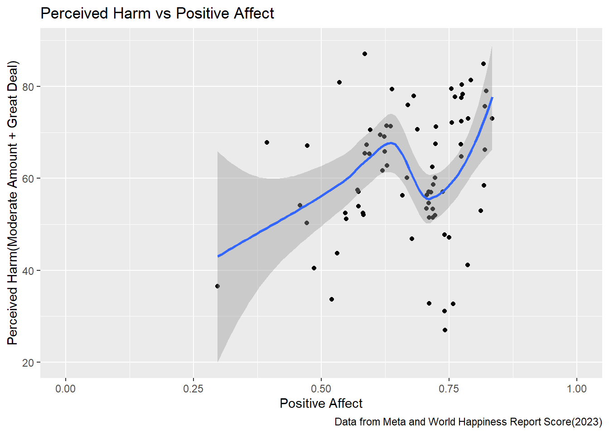
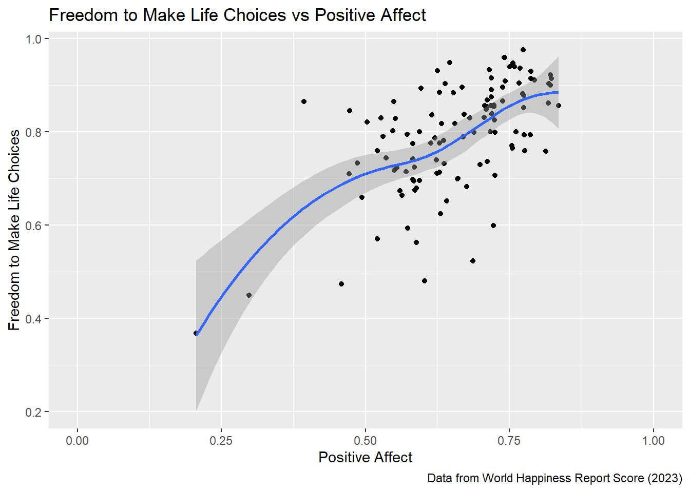

With global warming on the rise and climate change threatening to have serious consequences on the future, it is understandable to have some negative feelings surrounding the topic.
The problems we want to solve in relation to data is how the challenge of motivating the collective and individuals can mitigate climate change. To discuss this issue, we have selected three data-sets to discuss and analyze: ‘Opinions on climate data from Meta’, ‘World Happiness Report Score’, and ‘Storm data for both Atlantic and Pacific basins’.
This investigation is centered around interaction between opinions towards climate change, the well-being/happiness of populations, and manifestation of storms. Through data analysis, we will explore the intricacy of the three data-sets. We will use data analysis techniques studied in this course to present the data and problem solutions, as well as an article on ‘Climate emotions and anxiety among young people in Canada’ to further support our case.
1.3 Data Description
The data-sets we used contain many variables, which can individually offer insight and together in graphs and tables to interpret the sets and the problem stated. We used the following variables:
‘Country Name’ (char): from ‘World Happiness Report Score’ dataset, is the primary key to identify and filter data.
‘harm_personally_great_deal’ (double): from ‘Opinions on climate data from Meta’ data-set, measures the level of personal concern individuals have related to the caused by climate change.
‘harm_moderate_amount’ (double): from ‘Opinions on climate data from Meta’ data-set, measures the level of moderate concern individuals have related to the caused by climate change.
‘harm’ (double): from ‘Opinions on climate data from Meta’ data-set, measures the level of average concern individuals have related to the caused by climate change.
‘Positive Affect’ (double): from ‘World Happiness Report Score’ data-set, measures the average of previous-day affect measures for laughter, enjoyment, and doing or learning something interesting. (Helliwell, Huang, et. Al, 2022)
‘Negative Affect’ (double): from ‘World Happiness Report Score’ data-set, measures the average of previous-day affect measures for worry, sadness, and anger. (Helliwell, Huang, et. Al, 2022)
‘Count’ (integer): found through ‘Storm data for both Atlantic and Pacific basins’ data-set, where the cyclones data was grouped by ‘NameYear’ (integer) and ‘Basin’ (char), and then the function n() was used to find the number of storms per year.
1.4 Descriptive Statistics
1.4.1 Numerical Analysis: Public Opinion on Climate Change Impact
This table is used show what each countries opinions on how climate change harms a countries populations via an opinion survey. The ‘Country name’ column is categorical and provides the geographic region, while the ‘harm_personally_great_deal’, ‘Harm_moderate_amount’, and ‘harm’ columns are quantitative, representing the severity of the harm (a great deal, moderate amount) and the overall perceived harm of the two added together. The quantitative values are percentages of the surveyed population, and overall the values represent a subset of the ‘Opinions on climate data from Meta’ data-set.
1.4.2 Numerical Analysis: the Happiness of Each Country
# A tibble: 114 × 2
`Country name` `Positive affect`
<chr> <dbl>
1 Afghanistan 0.206
2 Albania 0.547
3 Argentina 0.724
4 Armenia 0.531
5 Australia 0.711
6 Austria 0.718
7 Bangladesh 0.394
8 Belgium 0.718
9 Benin 0.571
10 Bolivia 0.738
# ℹ 104 more rows
1.4.3 Scatter Plot Analysis: Perceived Harm vs Positive Affect
1.4.3.1 (Figure 1)
world_happiness_address2 <- world_happiness_address %>%filter(year ==2022) %>%select(`Positive affect`, `Country name`)world_happiness_climate_harm <-inner_join(climate_harm2, world_happiness_address2, "Country name")world_happiness_climate_harm_lab <-labs(title ="Perceived Harm vs Positive Affect",caption ="Data from Meta and World Happiness Report Score(2023)",y ="Perceived Harm(Moderate Amount + Great Deal)",x ="Positive Affect")ggplot(world_happiness_climate_harm, aes(x =`Positive affect`, y = Harm)) +geom_point() +geom_smooth(method ='loess', formula ='y ~ x', na.rm =TRUE) +xlim(0, 1) + world_happiness_climate_harm_lab

This scatter plot visually represent the relationship between ‘PerceivedHarm’ (combining both ‘great deal’ and ‘moderate amount’ harm categories. The curve describes a non-linear relationship where the points of harm positive affect varies. This suggests that external factors may be at play, influencing the relationship.
This plot shows the relationship between ‘Awareness’ and ‘Harm’. The data points suggest responses from each country, and the curve illustrates a non-linear relationship (as awareness increases, perceived harm increases until the peak, and decreases). The scatter plot suggests that external factors may be at play, influencing the relationship.
1.4.5 Line of Best Fit Analysis: Freedom to Make Life Choices vs Positive Affect
1.4.5.1 (Figure 3)
world_happiness_relation_to_freedom <- world_happiness_address |>filter(year ==2022)|>select('Country name', 'Positive affect', 'Freedom to make life choices')cleaned_world_happiness <- world_happiness_relation_to_freedom %>%filter(!is.na(`Freedom to make life choices`) &!is.na(`Positive affect`))world_happiness_relation_to_freedom_lab <-labs(title ="Freedom to Make Life Choices vs Positive Affect",caption ="Data from World Happiness Report Score (2023)",y ="Freedom to Make Life Choices",x ="Positive Affect")ggplot(cleaned_world_happiness, aes(y =`Freedom to make life choices`, x =`Positive affect`)) +geom_point() +geom_smooth(method ='loess', formula ='y ~ x', na.rm =TRUE) +xlim(0, 1) + world_happiness_relation_to_freedom_lab

This plot represents the relationship between ‘Positive affect’ and ‘Freedom to make life choices’. The points correspond to the countries’ average score. There is an upward trend represented through a line of best fit, which indicates a positive correlation (as there is more freedom in a country to make life choices, their positive affect increases).
1.4.6 Line Graph Analysis: Number of Storms per Year vs Negative Affect
1.4.6.1 (Figure 4)
Error: IOError: Failed to open local file 'C:/Users/imanc/Documents/GitHub/Data-Analytics-R/Project 3/Cyclone-1850-2023.parquet'. Detail: [Windows error 2] The system cannot find the file specified.
Error in eval(expr, envir, enclos): object 'cyclones' not found
Error in eval(expr, envir, enclos): object 'cyclones2' not found
Error in eval(expr, envir, enclos): object 'Canada' not found
The plot represents the relationship between ‘Negative affect’ (sadness) over a period (2019-2022) and storms per year. The trend-line moves up, suggesting that, as frequency of storms increase, negative affect on population increases.
1.5 Discussion
Our exploratory data analysis sought to unravel the complex interplay between human emotions, perceptions, and actions in the context of climate change, a challenge that extends beyond environmental ramifications to deeply affect socio-psychological aspects of human life. Our analysis parallels the insights from the article “Climate emotions and anxiety among young people in Canada: A national survey and call to action,” which sheds light on the emotional and psychological impacts of climate change on younger demographics. The parallels and contrasts between our data-driven findings and the article’s survey results offer a multifaceted view of how climate change is perceived and felt at the individual and societal levels.
Perceived Harm vs Positive Affect:
The intersection of perceived harm due to climate change with the overall positive effect of individuals presents a paradox. While one might expect that higher perceived harm would correlate with lower positive affect, our analysis suggests that the relationship is more nuanced. The scatter plot in Chunk 13 (Figure 1) aligns with the article’s findings, where young Canadians show a range of emotional responses from anxiety to optimism despite understanding the risks of climate change. This suggests a broader trend of adaptability and resilience among youth facing global environmental challenges.
Harm vs Awareness:
The non-linear relationship we observed between awareness of climate issues and perceived harm, depicted in Chunk 14 (Figure 2) reflects the article’s insights on the complexity of translating awareness into concern. It points to potential factors like psychological distancing or ‘awareness fatigue’, where heightened awareness does not equate to a proportional increase in concern, paralleling the article’s observations among young Canadians.
Freedom to Make Life Choices vs Positive Affect:
The data from the World Happiness Report Score (2023) revealed a compelling positive correlation between the freedom to make life choices and positive affect among populations, as seen in the visualization from Chunk 15 (Figure 3) resonates with the article’s emphasis on empowering young people in climate decision-making. It is imperative to consider that individuals in societies with greater autonomy may be better equipped to adapt to and mitigate the effects of climate change due to a heightened sense of agency and control over their lives.
Number of Storms per Year vs Negative Affect (Sadness):
The upward trend in negative affect, correlated with the frequency of storms, underscores the direct emotional impact of climate events on human well-being. This relationship, highlighted in Chunk 16 (Figure 4), is further echoed in the article’s discussion on the mental health toll of such events on youth. It’s particularly significant as it demonstrates the immediate and tangible effects of climate change on individual lives. The increasing frequency of storms, potentially indicative of a warming climate, has a measurable impact on the psychological state of populations. This observation emphasizes the urgent need for integrating climate resilience and mental health support into policy planning.”
1.6 Conclusion
In synthesizing the findings of our multifaceted investigation into the socio-psychological dynamics of climate change, we arrive at a nuanced understanding of its impact on human sentiments and actions. The paradoxical coexistence of perceived harm and an enduring sense of optimism, as depicted in our “Perceived Harm vs Positive Affect” study (Figure 1), illuminates the complex emotional landscape shaped by climate change. This duality, suggests that while people are increasingly aware of the risks posed by climate change, this awareness does not necessarily deepen their perception of harm, as seen in the “Harm vs Awareness” analysis (Figure 2).
The positive correlation between autonomy in life decisions and overall well-being, revealed in the “Freedom to Make Life Choices vs Positive Affect” data (Figure 3), further underscores the power of empowerment in bolstering resilience to climate adversities. Speaking to the potential of fostering individual agency as a catalyst for adaptive and mitigate actions against climate change.
Our exploration culminates in a striking revelation from the “Number of Storms per Year vs Negative Affect (Sadness)” (Figure 4), which highlights the immediate and visceral impact of climate phenomena on human emotions. Emphasizing the need for holistic strategies that address the mental health fallout of climate events alongside environmental interventions.
This study reinforces the idea that awareness, while foundational, is only the first step in a larger journey towards meaningful climate action. It is the interplay of awareness, understanding, and engagement that holds the potential to galvanize a powerful collective response against climate change. As we look to the future, our findings advocate for a strategy that marries environmental awareness with proactive engagement and emotional resilience. In doing so, we can cultivate a society more equipped to face the challenges of climate change, transforming awareness into action and concern into empowerment.
Powerful collective, which in turn can create a great change in the fight against climate change.